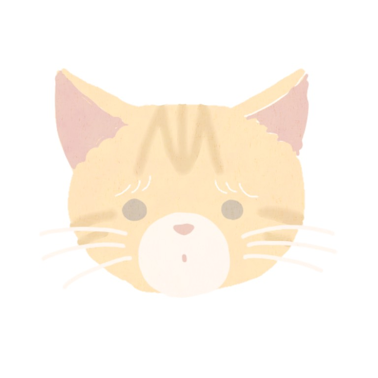

-
Profile
管理栄養士をしながらイラストレーターを行っていました。
現在は管理栄養士をやめ、フリーでイラストレーター、デザイン、漫画の作成を行っています。
主にInstagram、CrowdWorks、ランサーズ、ココナラで活動中
愛猫のそらちゃん（♀）と２人暮らしの模様をInstagramで発信中
イラスト作成、デザイン、漫画作成の他に、管理栄養士の経験を活かした食事のサポートもイラスト付きで行います。
お仕事の依頼は、SNSのDM、メールアドレス、お問い合わせフォームからお気軽にご連絡ください。お見積もり依頼のみでも可能です。
-
History
０〜５歳 宮崎県出身
実家が犬の訓練士だったので、犬に囲まれて育つ
1歳のとき父が他界
母と祖母二人ぐらし5〜10歳 親が働きに出ている間、留守番中ずっと絵を描いて過ごす
料理のお手伝いもこの頃からスタート
小学校高学年でイラスト漫画クラブに所属する
本・漫画を読むことが大好きになる
ハムスターを飼う中学時代 美術部に所属
副部長を務める
高校時代 美術部に所属
本格的なデッサンや作品作り始める
画像サイトで無料で似顔絵を描き始める
進路を管理栄養士に決める大学時代 管理栄養士の国家資格取得
iPadゲット
ココナラで似顔絵販売を始める22〜24歳 東京へ上京
保育園の管理栄養士として就職
給食調理業務/献立作成/保育補助/保護者からの栄養相談/食育活動
子育て支援員の資格取得24〜26歳 別の保育園へ転職
2020年6月の自粛期間を機にイラスト用Instagram開設
愛猫そらちゃんを家族に迎え入れる
イラストレーターとして精力的に活動を始める -
Others

Instagram
HOME